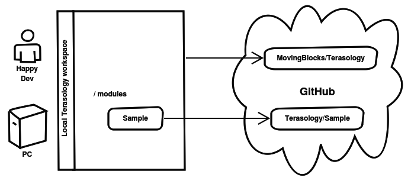

Modules¶
To work with modules you need to either fetch existing ones or create new ones. Terasology offers utility tasks in gradle to make this process easier.
We will use the Sample module from https://github.com/Terasology/Sample for further examples.
Terasology’s Git Setup¶
Modules are structured as separate git repositories, nested in the engine repository.
The main project will contain the engine and everything else with modules located at the /modules/* directory.
These nested git repositories are excluded from tracking in the engine git repo, holding the main Terasology project. Therefore modules and the engine are treated independently in version control. The following diagram explains this concept:
Fetching existing Modules¶
Existing modules from the Terasology organization can be fetched by running
gradlew fetchModuleSample from the root of the Terasology workspace.
In this example, Sample is the name of the module to fetch. Gradle will fetch the existing GitHub repository from https://github.com/Terasology/Sample to your workspace at modules/Sample.
To properly adjust your workspace you need to regenerate the additional project files via gradlew idea.
The main difference to a git clone is, that the gradle command will include a build.gradle to the module, along with placeholder directories for all asset types and such.
For modules which are not available under the Terasology organization, the repository has to be cloned and a build.gradle from another module, e.g. from Core has to be copied into the cloned module.
Note
Sometimes gradlew idea does not add the module for you. To do this, simply activate the <moduleName>.iml file and select Import <ModuleName> Module.
Create a new Module¶
New modules can be created with a similar command:
gradlew createModuleMySample.
This will create a module named MySample at modules/MySample.
Similar to fetching a module, be sure to adjust your workspace after your module lineup has changed.
Running gradlew idea from the root directory will create the required project files.
By default, the module will be initialized with an empty git repository. Connecting the new module to GitHub can be done in one of two ways, either of which needs you to create a new remote reference in the local git repository.
- You can create your own module repository on your personal GitHub account.
- You can ask the project staff to please create a module repository for you under the Terasology organization and give you access. This is also possible later on.
After you have a module repository on GitHub and still from modules/MySample, execute git remote add origin <repository_url>, where repository_url is either your personal repository url or the official repository url.
Note
Of course, you can have a private repository and a link to an official repository at the same time, e.g. with origin as name for your private repository and terasology as name for the official repository. It is up to you, how you finally organize your module setup.
Dependency Resolution¶
You may end up fetching or creating a module that depends on other modules. Again our Gradle setup makes this super easy to handle!
If you fetch a module X that has a dependency on module Y the next execution of any gradlew command will automatically fetch a binary copy (typically a .jar-file) of module Y including in turn any of its dependencies (a “transitive” dependency).
Any binary module dependency will be stored both in your local Gradle cache as well as in /modules where the game will use it from at runtime.
If you later fetch the source code for module Y it will automatically take precedence over any old binary copy of Y.
You can delete any binary copies of modules at any time then rerun gradlew to have them re-fetched.
Modding API & Sandboxing¶
Terasology’s engine uses a whitelisting approach to expose API for modules using two primary methods and a rarely needed third one:
- Internal classes or packages marked with the
@APIannotation are available to all modules. - External classes or packages in the basic whitelist at
org.terasology.engine.module.ExternalApiWhitelistare available to all modules. - Rarely blocks of code in the engine may be hit in a way requiring use of
AccessController.doPrivileged(...)- usually this is nothing module authors have to worry about but once in a while it could explain something quirky.
This API has two bearings: First, it aims to protect the user’s system from malicious code (for instance the direct use of java.io.File is not possible) and second, to better document what is available.
If one attempts to use a class which is not whitelisted in one of these cases, this will result in a log message like:
Denied access to class (not allowed with this module's permissions): some.package.and.class.
While modules can themselves use the @API annotation to mark interesting code for reuse no special security is attached at this point beyond the engine. Any module can use anything from any other module it declares as a dependency.
The org.terasology.documentation.ApiScraper class will output a list of all @API marked functionality. [1] [2] [3]
For more information of how the module sandbox works, see the Gestalt Module Sandboxing wiki page, including how to disable security entirely for prototype work.
| [1] | Sample output of the ApiScraper as of early Feb. 2016. |
| [2] | More annotations like @Command could be added to the API, #2159. |
| [3] | Documentation is still in overhaul phase, #1975. |